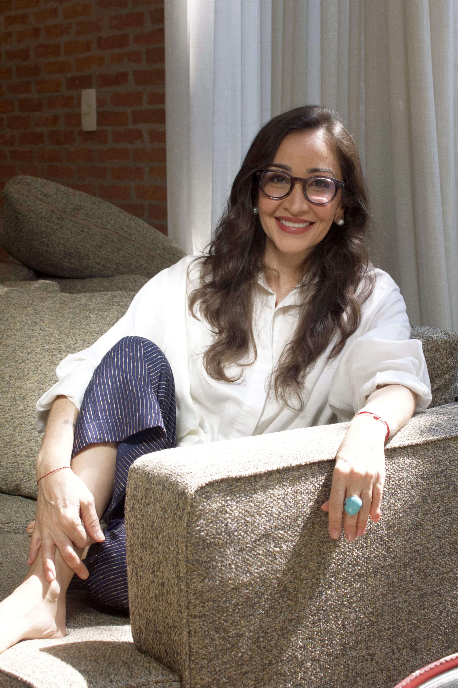

Por fora está tudo em ordem, e por dentro algo não encaixa.
Trabalho, família e rotina funcionam, e ainda assim existe uma pergunta que não sai do lugar.
Vanessa Cassarotti. Psicóloga em São Paulo (CRP 06/237547).
Psicoterapia individual presencial e online, com abordagem fenomenológico-existencial.
Marcar uma conversa inicial e sem compromisso pelo WhatsApp
Para quem é
Estes são alguns dos pontos de partida que mais escuto.
Trabalho, família e rotina funcionam, e ainda assim existe uma pergunta que não sai do lugar.
Carreira, relação, mudança de cidade ou de vida. Muitas vezes a dificuldade está menos em escolher e mais em assumir o que a escolha implica.
Quando o roteiro conhecido acaba (uma separação, uma aposentadoria, filhos que saem de casa, uma carreira que já não faz sentido), abre-se um espaço desconfortável e cheio de possibilidades.
Um cansaço que o descanso não resolve, entre o tédio e a angústia, com a impressão de que a vida está acontecendo ao lado.
Trabalhada sem moralismo e sem a lógica de certo e errado, olhando para o sentido que comer, controlar ou evitar tem na sua história.
Nas relações de família, de casal e de trabalho, os mesmos enredos costumam reaparecer com personagens diferentes.
Luto, separação, diagnóstico de alguém querido, o fim de uma fase. A finitude também faz parte do que se pode conversar aqui.
Se você se descreve como ansioso, esgotado ou sem rumo, esse também é um bom ponto de partida. O que está acontecendo com você se entende em conversa, e nenhuma lista dá conta disso.
Primeira consulta
Você me escreve pelo WhatsApp, com uma mensagem curta, e combinamos dia, horário e modalidade.
A primeira sessão é uma conversa sobre o que trouxe você até aqui. Não precisa chegar com o assunto organizado, nem saber nomear o que sente, nem preparar nada. Você fala no ritmo que puder, e ninguém aqui está julgando o que você diz.
No final, conversamos sobre como seria o trabalho (frequência, formato, combinados de horário, faltas e remarcações). A decisão de continuar é sua, e você pode levar o tempo que precisar para pensar; se quiser seguir comigo, combinamos os próximos encontros, e se preferir não seguir, tudo bem também.
Contato
Atendimento presencial em São Paulo e online
Subir ao topoComo trabalho
Atendo em sessões individuais de 50 minutos, presencialmente em Pinheiros, em São Paulo, ou online, por videochamada, de onde você estiver. O ponto de partida costuma ser um encontro por semana, e a frequência é combinada em conjunto e revista ao longo do processo.
No atendimento online, o formato, a duração e o sigilo são os mesmos do presencial. Você só precisa de um lugar reservado, uma conexão estável e fones de ouvido, se possível.
Tudo o que é conversado nas sessões é sigiloso, conforme o Código de Ética Profissional do Psicólogo.
Valores e horários disponíveis são conversados já no primeiro contato, com calma e sem compromisso, e qualquer dúvida pode ser retomada na primeira sessão.